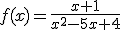
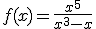
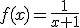
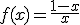
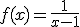

Saltar la navegación
1.- Indica cuál es la verdadera:
Opción 1
a) Un elemento del conjunto final no puede ser imagen de dos elementos del conjunto inicial
Opción 2
b) La correspondencia entre los estudiantes y sus amigos es función
Opción 3
c) Un elemento del conjunto final siempre tiene que ser imagen de un elemento del conjunto inicial
Opción 4
d) La correspondencia entre los números reales y sus cuadrados es una función
2.- Averigua el dominio de esta función: 
a) (-∞,1)U(4,∞)
b) R -{1,4}
c) R -{-1,-4}
d) Ninguna es correcta
3.- Encuentra el dominio de la función: f(x) = √(4-x2)
a) [-2,2]
b)(-∞,-2]U[2,∞)
c) R - {-2,2}
d) [2,∞)
4.- La función: 
a) es impar
b) no es par ni impar
c) es par
d) es a la vez par e impar
5.- Los puntos de corte de la función: y = x3 - 8x2 + 7x , son:
a) (0,0),(1,0),(7,0)
b) (0,0),(1,0)
c) (1,0),(7,0)
6.- Decide cuál es la verdadera:
a) Todos los extremos relativos de una función son también absolutos
b) Todos los extremos absolutos de una función son también relativos
c) Todas las funciones tienen extremos absolutos
d) Todas son falsas
7.- Si f(x) = x + 1 y g(x) = x3, entonces gºf (x) =
a) x3 + 1
b) 3x + 3
c) x3 + 2x2 + x
d) x3 + 3x2 + 3x + 1
8.- La función inversa de  es f-1(x)=
a)
b) 
c) 
d) Ninguna de ellas
9.- La población de cierto municipio en el año 2002 fue de 179 000 habitantes, y en el 2005 el censo era de 250 000. Calcula mediante interpolación lineal la población que hubo en dicho municipio en el año 2004
a) 226 340 habitantes
b) 224 483 habitantes
c) 216 240 habitantes
d) 200 030 habitantes
10.- En la siguiente tabla se dan los pesos, en kg, de una niña al nacer y en los dos siguientes meses:
Utilizando un polinomio de interpolación, ¿qué peso estimas que alcanzará cuando tenga año y medio?
a) 15,235 kg
b) 14 kg
c) 13,230 kg
d) 14,900 kg
Habilitar JavaScript
Obra publicada con Licencia Creative Commons Reconocimiento No comercial Compartir igual 3.0